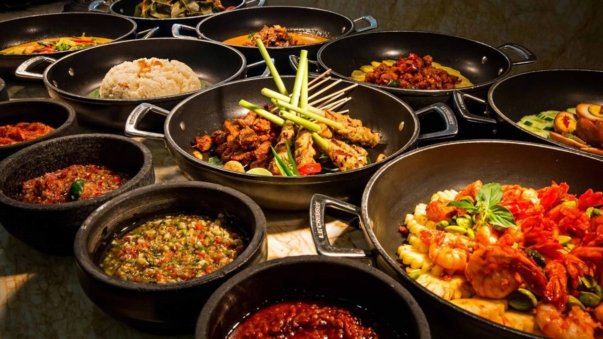

Sejarah
Kata "Indonesia" berasal dari bahasa Latin "Indus" yang berarti
India dan "Nesos" yang berarti pulau. Nama ini menggambarkan
negara kepulauan terbesar di dunia yang terletak di Asia Tenggara.
Indonesia memiliki sejarah yang kaya dengan berbagai peradaban
dan budaya yang telah berkembang selama ribuan tahun.
Dari zaman prasejarah hingga masa penjajahan, Indonesia telah
melalui berbagai peristiwa penting yang membentuk identitas dan
kekayaannya saat ini. Dengan begitu banyak keragaman etnis,
agama, dan budaya, Indonesia adalah negara yang unik dan menarik
untuk dipelajari.
Keindahan Alam
Indonesia adalah surga bagi para pecinta alam. Dengan berbagai
lanskap yang menakjubkan, mulai dari gunung-gunung yang menjulang
hingga pantai-pantai berpasir putih yang indah, negara ini
menawarkan pengalaman alam yang tak terlupakan.
Salah satu contohnya adalah Taman Nasional Gunung
Bromo-Tengger-Semeru di Jawa Timur, yang adalah rumah bagi gunung
berapi Bromo yang ikonik. Anda dapat melakukan pendakian ke
puncaknya untuk melihat matahari terbit yang spektakuler di atas
lautan asap.
Budaya
Budaya Indonesia sangat kaya dan beragam. Ini mencakup seni,
musik, tarian, dan kuliner yang unik. Berikut adalah beberapa
aspek budaya yang menonjol di Indonesia:
Seni
Seni tradisional Indonesia meliputi wayang kulit, batik,
ukiran kayu, dan banyak lagi. Setiap daerah memiliki seni yang
berbeda-beda yang mencerminkan warisan dan budaya mereka.
Seni adalah ekspresi budaya yang mendalam, dan seni tradisional
Indonesia sering menggambarkan mitologi, cerita rakyat, dan
nilai-nilai yang diwariskan dari generasi ke generasi.
Kuliner

Kuliner Indonesia sangat beragam dan lezat. Makanan seperti
nasi goreng, rendang, sate, dan soto sangat populer di seluruh
dunia. Cobalah berbagai hidangan tradisional ketika Anda
berkunjung ke Indonesia.
Kuliner Indonesia mencerminkan keragaman budaya negara ini.
Setiap daerah memiliki hidangan khasnya sendiri yang menggunakan
bahan-bahan lokal dan rempah-rempah yang khas.